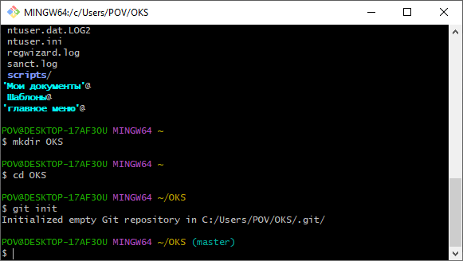

Создать репозиторий github (или аналог), настроить пару ключей для доступа
- Создали аккаунт 20250414 на github.
- Создали репозиторий proektpoOKS в нашем аккаунте.
- В репозитории размещен один файл README.md
- На компьютере установили программу Git Bash v.2.49.0-64-bit доступную по ссылке
- Осуществили начальную настройку параметров программы Git Bash, просмотрели содержимое текущей папки
- Создали пару SSH-ключей (приватный – SSH1, публичный – SSH1.pub)
- Добавили на компьютере в файл \etc\ssh_config следующую запись:
- Добавили в раздел https://github.com/settings/keys информацию для SSH keys, содержащуюся в ранее созданном файле SSH1.pub
- Подключили локальный репозиторий к GitHub
- Клонировали репозиторий proektpoOKS на компьютер
git config --global user.name "20250414"
git config --global user.email "proektpoOKS@mail.ru"
ls
git config --global user.email "proektpoOKS@mail.ru"
ls
Создали новую папку OKS, инициализировали её как локальный репозиторий
mkdir OKS
cd OKS
git init
 cd OKS
git init
ssh-keygen -t ed25519
Host git@github.com:20250414/proektpoOKS.git
HostName git@github.com:20250414/proektpoOKS.git
User 20250414
IdentityFile g:/Programms/Git/etc/ssh/SSH1
IdentitiesOnly yes
HostName git@github.com:20250414/proektpoOKS.git
User 20250414
IdentityFile g:/Programms/Git/etc/ssh/SSH1
IdentitiesOnly yes
Также подключили созданный приватный ключ

git remote add origin git@github.com:20250414/proektpoOKS.git
git clone git@github.com:20250414/proektpoOKS.git
На компьютере появилась папка с файлом README.md